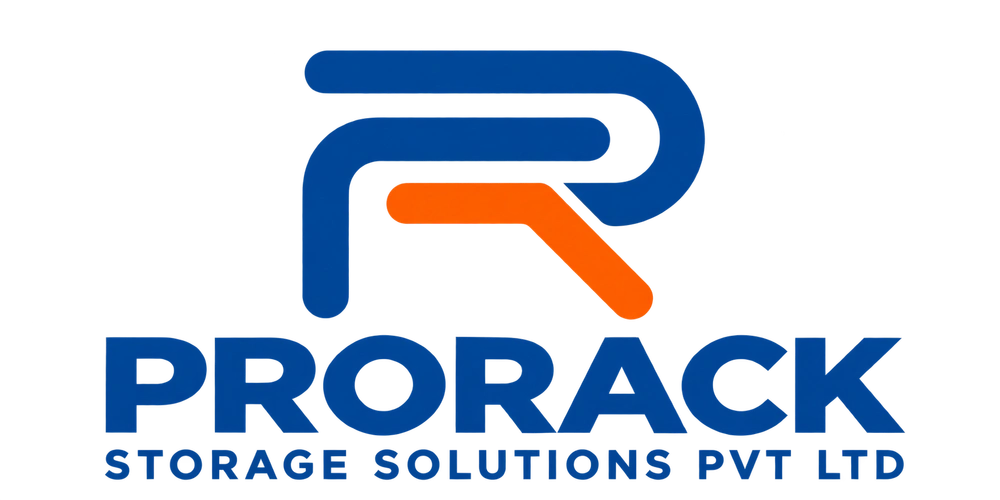
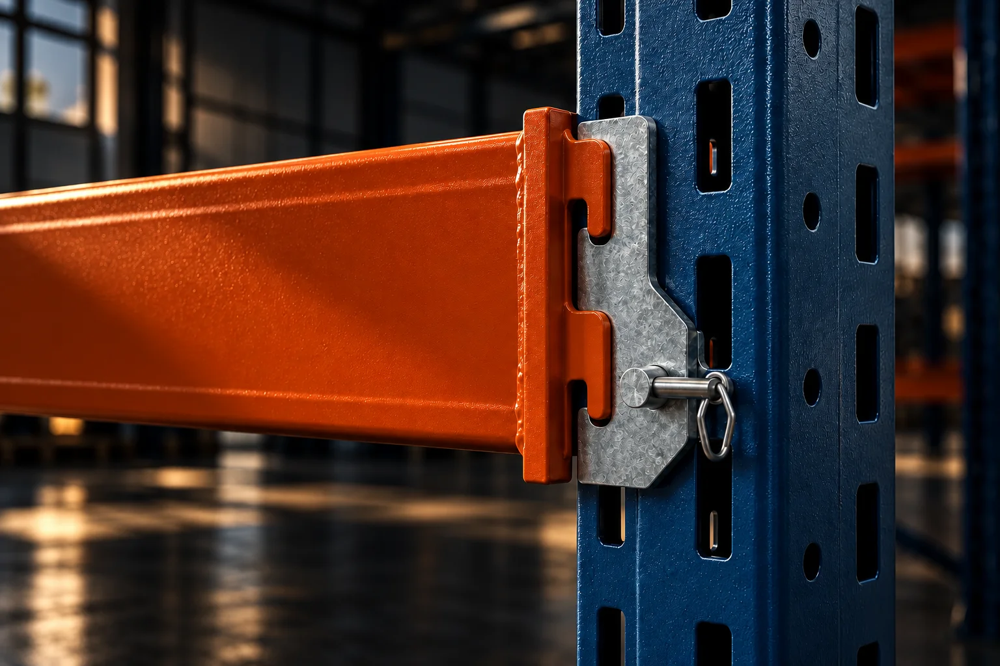
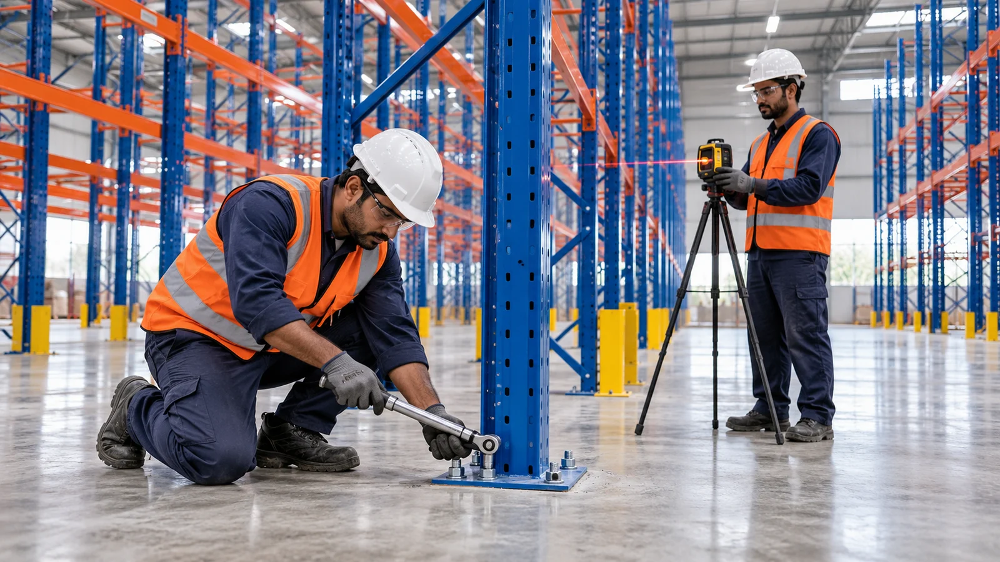
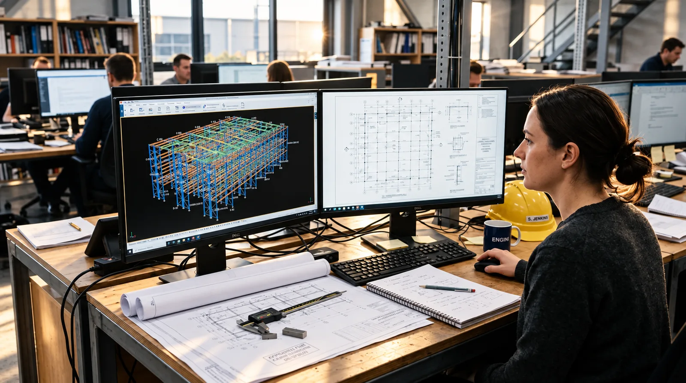
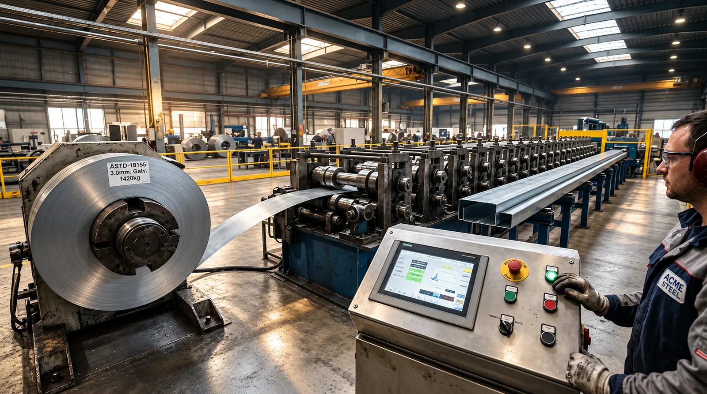
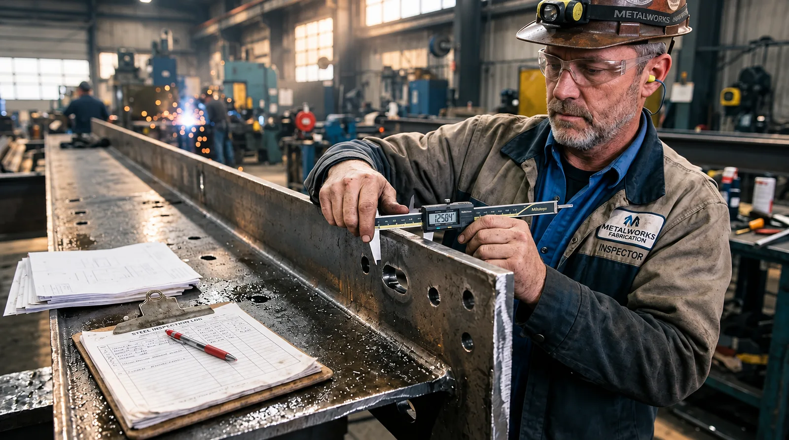
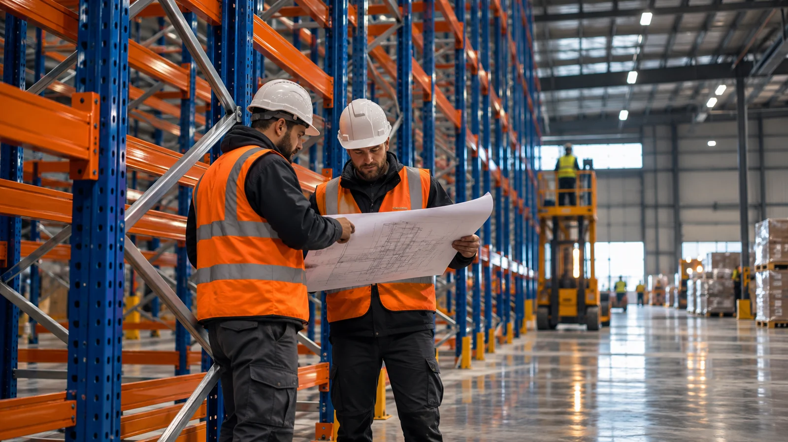
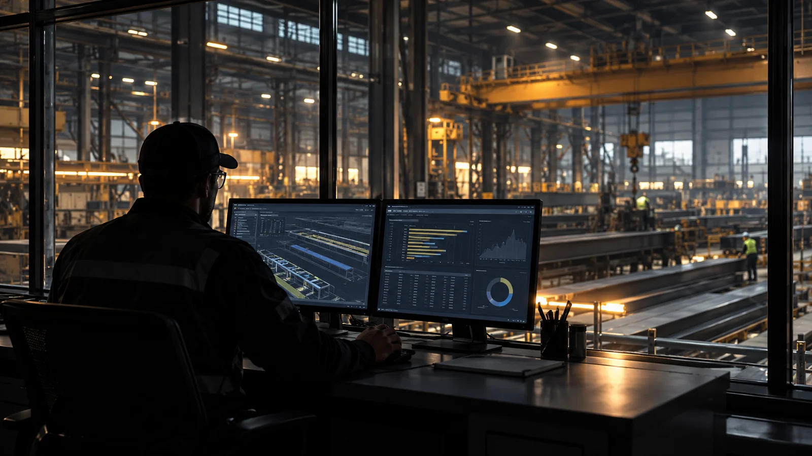

ProRack AI / Warehouse performance solutions
Engineering betteruse of space
Warehouse racking, shelving and mezzanines.
Designed & manufactured in Hyderabad, India and installed Pan India.
01 / The ProRack approach
Every square metre.
Working harder.
Storage planned around
your warehouse.
Your warehouse has its own challenges. We connect engineering, storage systems and project execution to help you store more, access faster and operate better.
Meet ProRack AI
HOW WE WORK / THE CUSTOMER JOURNEY
From your first question.
To final handover.
A clear process, an accountable team and a solution built around your operation.
Whether you need a new storage system, engineering support, manufacturing or installation services, we begin by understanding the challenge. The stages below show a typical end-to-end project. Individual services follow the steps relevant to their scope.
Discuss your requirementYour project journey is tailored to the agreed scope, not forced into a one-size-fits-all process.
 01Enquiry & discoveryTell us the challenge, not just the product name.
01Enquiry & discoveryTell us the challenge, not just the product name.Share what you need to store or build, your operational goals, location, timeline, and any reference drawings. We clarify your requirement before recommending a solution.
What you receive An initial requirement brief and next steps.

02Site study & requirementsUnderstand the loads, space and operating conditions.We review site dimensions, load profiles, handling equipment, access, safety considerations and future needs. We arrange a site visit or further technical consultation when the project requires it.
What you receive An agreed set of design inputs and constraints.
 03Solution & proposalChoose the right approach before work begins.
03Solution & proposalChoose the right approach before work begins.We recommend suitable systems and configurations, discuss technical and commercial details, and align on scope, timing and responsibilities. Following acceptance and a purchase order where applicable, the project moves into execution.
What you receive A defined solution, proposal and approved scope.

04Engineering & BOMTurn approved requirements into build-ready information.For projects needing fabrication, engineering prepares the relevant layouts, technical drawings and bill of materials (BOM). These establish what production and site teams need to execute.
What you receive The applicable approved drawings and BOM.

05Manufacturing & qualityFabricate, finish and inspect with care.Production teams manufacture components using processes and machinery appropriate to the design. Finishing, including powder coating where specified, and quality checks form part of the workflow.
What you receive Finished and inspected components for dispatch.

06Packaging & dispatchPrepare materials for the journey to site.Materials are identified, packed and organized for transport. Dispatch and delivery are coordinated around the agreed site requirements and installation sequence.
What you receive Scheduled material delivery and applicable dispatch records.
07Site execution & installationBring the approved plan to life.
For installation projects, GoSmartFit or the contracted specialist installation team coordinates on-site execution. Depending on scope, qualified project management, safety personnel and quality oversight help keep work controlled and documented.
What you receive Installed work and relevant site inspection records.

08Verification & handoverClose the project with clarity and accountability.We review the completed scope, address agreed close-out items and provide applicable quality, installation and handover documentation. GoSmartFit and other relevant specialist teams manage applicable site close-out; any contracted support or digital service is confirmed at handover.
What you receive Agreed project documentation, handover and support details.


03 / Find your fit
What are you
optimizing for?
Start with what you need to achieve. Explore a suitable starting point, then work with our engineers to confirm the right configuration.
Designed for the way you work, from logistics and manufacturing to retail and cold storage.
04 / ENGINEERING & SPECIALIST DELIVERY
One clear vision.
Three specialist roles.
ProRack leads the storage solution, engineering and manufacturing story. On-site installation belongs to GoSmartFit; warehouse MEP and infrastructure integration belong to ProMec. Explore each role without confusing their responsibilities.
Illustrative concept imagery. Official GoSmartFit and ProMec logo artwork will replace typographic brand treatments after approval.

ProRack AI / Illustrative concept05 / DIGITAL INTELLIGENCE
From scattered updates.
To one clear picture.
Know what is happening from the first order to the factory floor and site handover. Our connected intelligence vision brings project information together so teams can act earlier.
Capabilities shown as concepts and sample demonstrations. No live customer or machine data is displayed.
Explore Digital IntelligencePlanning your warehouse
Warehouse racking questions
What warehouse storage systems does ProRack offer?
ProRack offers selective pallet racking, wide-aisle and very narrow-aisle racking, drive-in and drive-through racking, multi-tier shelving, cantilever racking, pallet and carton flow racking, and mezzanine floors. System selection depends on the goods, handling equipment and building constraints.
Where is ProRack based?
ProRack Storage Solutions India Private Limited is based in West Marredpally, Secunderabad, Telangana, in the Hyderabad region of India. Contact the team to discuss the location and scope of your warehouse project.
What information is needed for a warehouse racking quotation?
Share your project location, warehouse dimensions and clear height, pallet or item dimensions and weights, storage quantity, handling equipment and expected timeline. ProRack reviews the requirement before preparing a project-specific quotation.
Compare storage systems · Discuss your warehouse requirement
Your next warehouse starts with a conversation
Let's make
space work.
New facility or existing operation.
Tell us what you need to move forward.